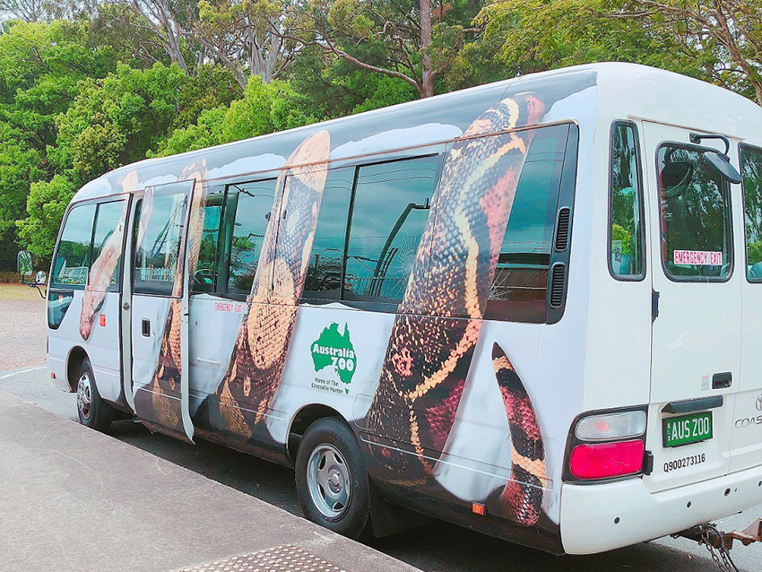

疫情肆虐，大家的自由受到了限制，只能透過照片回憶美景。讓我回想起曾經旅居的澳洲。踏上澳洲本土後，處處都能讓我大開眼界。因為本身就崇尚西方文化，完全沒有水土不服等問題，反而讓我學會了如何「放慢步調」。
布里斯本，南岸公園(Brisbane, South Bank)
在亞洲的高壓環境下，大家早已習慣快速的生活步調。但在西方文化的生活中，即使你想加快步調也不太容易。因為周遭的每一個人都相當放鬆，享受當下的每一刻。不論你身處於城市的哪一個角落，總是可以看到有人躺在草皮上曬太陽、看書，甚至是與朋友們小酌等。享受當下的生活思維，是我到澳洲後的第一堂入門課。因為在台灣這樣的景象，可以說是少之又少。
布里斯本，南岸公園(Brisbane, South Bank)
布里斯本位在昆士蘭州，在布里斯本的夏天，高溫是相對驚人， 40度的氣溫已經是習以為常。在南半球的紫外線也是很危險的敵人。因此，防曬絕對要做好，若不想忍受這種高溫，建議大家還是避開夏天這個季節去旅行。如果要我說，昆士蘭在我心中的印象是如何，我會以「海邊王國」來介紹。只要你有一台車，不論往哪邊開，總會看到遼闊寬廣的海邊。我永遠忘不了，那年夏天，我每週假日都往海邊跑。澳洲的海邊，各個都有不同特色，海水也都非常清澈，唯一要小心的是鯊魚。只要新聞有報導哪一區海邊有鯊魚出沒，基本上就不要過去了。畢竟有這麼多的海邊供你選擇，還是要以自身安全為第一考量。
| 上圖 => 卡隆德拉(Caloundra) / 下圖 => 紅崖(Redcliffe) | ||
接下來要介紹大人小朋友都愛的動物園。東澳最著名的動物園，就是由已故的鱷魚先生所創立，目前由他兒子接管經營。我也是因為小時候就看著鱷魚先生的頻道長大，因此決定要搭著火車去一探究竟。由於，從火車站到動物園還有一段路程，因此動物園有提供免費小巴士接駁。動物園的大門口也設計的相當有特色，是以相機底片的方式呈現。
|  |
澳洲動物園免費接駁車
澳洲動物園大門口
澳洲動物園的特色，我想除了可以看澳洲養育的動物之外，他們也相當重視人們對於動物的知識。在園區內常常可以看到，工作人員帶著不同動物親自與大家互動，讓你跟動物們近距離接觸，他們也會很詳細地介紹這些動物的習性。想要增進英文聽力的朋友們，一定要把握這個絕佳機會。因為也有小朋友在現場，工作人員一定會減緩平時的語速以及很有耐心地講解。
鱷魚先生一家人的銅像
動物互動區
逛完一圈園區後，我發現澳洲動物園其實就是半開放式的動物園。有蠻多區域是開放民眾們去體驗、拍照。像是可以「抱抱無尾熊」、「騎駱駝」、「袋鼠開放區」、「狐蒙區」等等。但對於開放區域，時常還是會擔心動物們的安危，不過在我的觀察下，對於不拍打以及不餵食已經是基本常識，這樣的民眾素質真心敬佩。
以上分享給對於澳洲有興趣的朋友們，有機會一定要去開拓眼界，體驗不同文化。
| 左圖 => 袋鼠開放區 / 右圖 => 狐蒙區 |